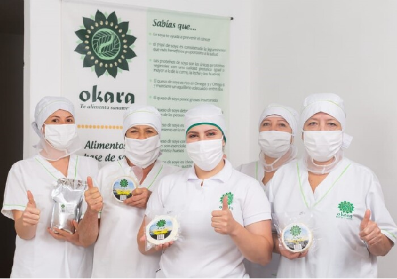

QUIENES SOMOS

OKARA ALIMENTOS VEGANOS
Es una empresa ubicada en el municipio de La Ceja Antioquia, dedicada a la elaboración de alimentos de origen vegetal.
Su propósito es impactar de forma positiva, notable y permanente la salud de los hogares y desde ahí la salud de todos los seres humanos: La Tierra.
Lo que hacen para alimentar este propósito es dar a las personas alternativas exquisitas y sanas de alimentación que desarrollen su potencial y sean amigables con el medio ambiente.
Sus productos son muy apetecidos por el público interesado en una alimentación sana y amigable con la naturaleza. Sin embargo, no están enfocados en un mercado especifico y se esmeran por ofrecer un producto fácilmente asimilable por el público en general, lo que permite apuntar a un mercado mayor.
Los productos que comercializan son: Cuajada de Soya, Tofu Natural, Tofu Finas Hierbas y Leche de Soya.
NUESTRO EQUIPO

Mary Ruiz.
Madre Cabeza de familia.
" Lo que más me gusta de Okara es el compromiso que tiene con los clientes, haciéndoles llegar un producto de excelente calidad. Ese es nuestro compromiso día a día, me gusta mucho el entorno de trabajo en el que se desarrolla la empresa."

Lorena Cardona.
Madre Cabeza de familia.
"Me gusta trabajar en Okara porque es una empresa conformada por mujeres, motivadas a sacar la empresa adelante, ademas es una empresa que elabora alimentos saludables para todo tipo de personas. Y sus creadores son personas muy motivadas y creativas en función de la empresa"

Maryory Ruiz.
Madre Cabeza de familia.
"Me gusta trabajar en Okara por que es una empresa amigable con el medio ambiente, por que tiene un ambiente de trabajo muy bueno, además por que es nuestro apoyo para salir adelante día a día. Por que nuestros productos son muy buenos para nuestra salud."

Natalia Bedoya.
Madre y Empresaria.
"Me gusta trabajar en Okara porque es una empresa que siempre está pensando en el bienestar de las personas tanto de nuestros clientes como de las personas que allí trabajamos."